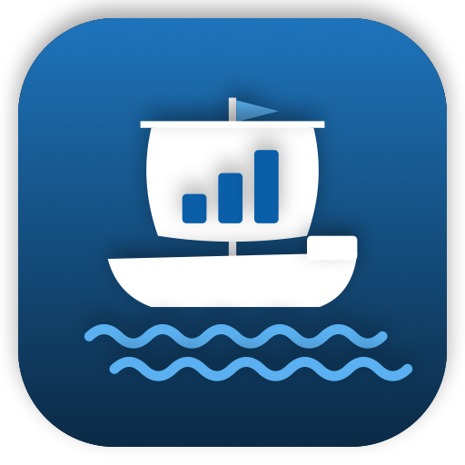

Florian Bachmann – Apps
Apps für iPhone, iPad, Mac und Apple Watch – ohne Werbung, ohne Tracking.

Kontora
Dein digitaler Geld-Lehrling – Haushaltsbuch, privat auf deinen Geräten.
IntensivLotse
iPhone & iPad · Lerninhalte für die Intensivpflege, verständliche Fachbegriffe, Rechner, Scores und eigene Hausstandards.
IntensivLotseSim
iPad & Mac · Patienten- und Beatmungssimulation mit gemeinsamem Fall, Maßnahmen, Medikamenten und Fernbedienung.
Kontakt
Florian Bachmann · Helenenstraße 19 · 09212 Limbach-Oberfrohna · Deutschland